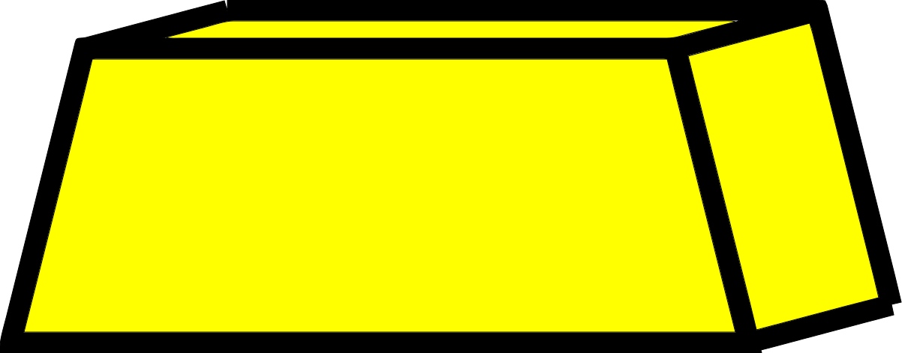
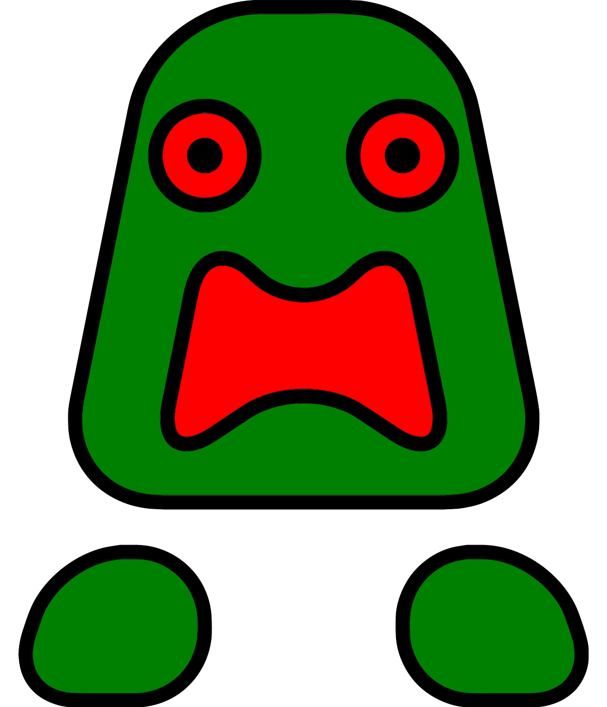
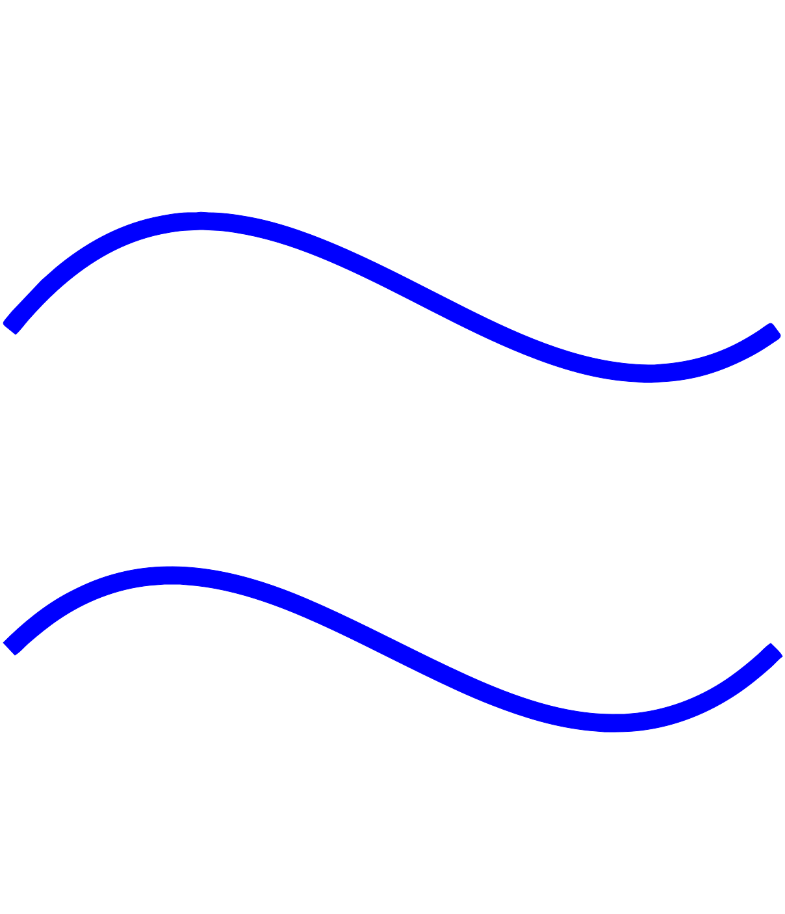
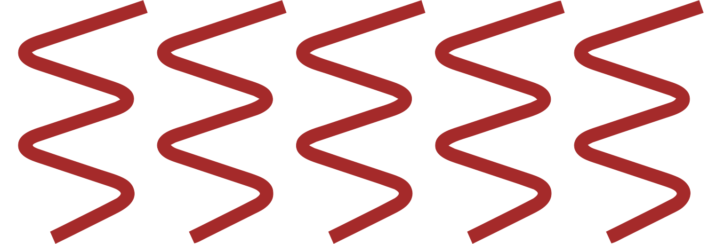

Wumpus Worldmdi-informationmdi-restartmdi-restore-alertmdi-eyemdi-eye-offArcher actionsmdi-foot-printmdi-rotate-leftmdi-rotate-rightmdi-ray-start-arrowPoints: {{ points }}LogClear logmdi-information InfoPurpose of the game
The archer
starts at (0,0) of the cave of room,
aiming to get the gold ,
while avoiding the pits and the wumpus .
Layout of cave
The cave is a {{ cave.size[0] }}-by-{{ cave.size[1] }} grid.
Component
Appearance in the cave
gold
1, randomly appears in cell other than (0,0)
wumpus
1, randomly appears in cell other than (0,0)
pits
multiple, each cell has probability of 0.2 to be a pit
Gold, pit, and wumpus will not appear in the same cell, and they will not be in (0,0).
Senses
Breeze  will be perceived when the archer is next to a pit .
Stench  will be perceived when the archer is next to the wumpus .
Actions
As the archer is the agent, only the archer can perform actions.
Action
Points
Keyboard shortcut
move forward to next room mdi-foot-print
-1
mdi-menu-up
turn left by 90° mdi-rotate-left
-1
mdi-menu-left
turn right by 90°mdi-rotate-right
-1
mdi-menu-right
shoot arrow mdi-ray-start-arrow
-10
spacebar
If the wumpus is in one of the room that the arrow pass through, the wumpus will die. The archer has only 1 arrow.
End game
The game is over when the archer dies, or reaches the gold.
Event
Points
Status
fall into a pit
-1000
you lose, the archer is dead
being eaten by the wumpus
-1000
you lose, the archer is dead
reach the gold
1000
you win, the archer is alive and have the gold
Other controls
Additional controls are as follows.